In this recipe, we will call an OSB service from a SCA Suite composite. The OSB service consists of a proxy service CustomerManagementAsync with a one-way interface accepting the call and a business service CustomerManagementCallback, which implements the callback interface for sending the response back to the SOA Suite in an asynchronous manner:
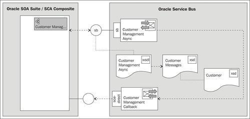
Copy the soa-suite-invoking-osb-service-async-from-sca-composite holding the JDeveloper project from \chapter-8\getting-ready\invoking-osb-service-async-from-sca-composite\ into a local workspace folder.
Import the base OSB project containing the necessary schemas and the right folder structure into Eclipse from \chapter-8\getting-ready\invoking-osb-service-async-from-sca-composite.
We start with the OSB side where we will create a proxy service which has a one-way interface. In the proxy service we first only add a pipeline pair, which logs the SOAP header. By that we can examine the addressing part, which we need later to dynamically callback through a business service.
In Eclipse OEPE, perform the following steps:
CustomerManagementAsync.wsdl in the wsdl folder.The WSDL defines two port types, one for the one-way request and one for the response as a callback:
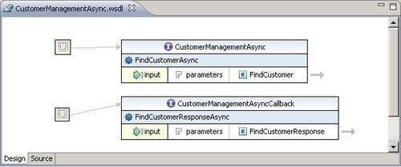
The CustomerManagementAsync port type will be implemented by the proxy service whereas the CustomerManagementAsyncCallback will be implemented by a business service. Let's start with the proxy service:
proxy folder, create a new proxy service and name it CustomerManagementAsync. CustomerManagementAsync.wsdl in the wsdl folder.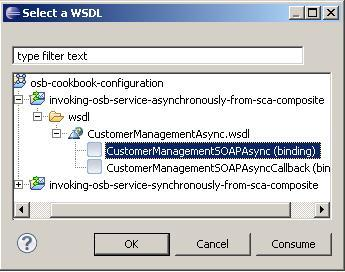
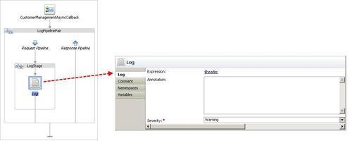
We have now created the proxy service, which logs the content of the header to the console. We will add the invocation of the callback business service later. Let's now create the Mediator on the SOA Suite side, which will call this proxy service through a direct binding. In JDeveloper perform the following steps:
invoking-async-from-sca-composite.jws file. CustomerManagementASync into the Name field.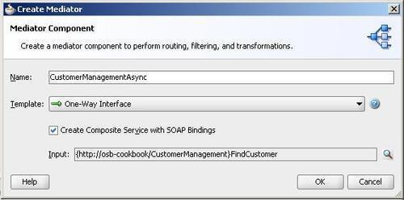
Now let's invoke the OSB proxy service from the Mediator. For that we need to add a direct binding to the composite. In JDeveloper, perform the following steps:
CustomerManagementAsyncDirect into the Name field.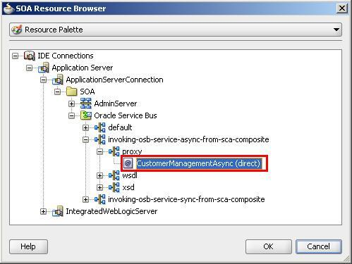
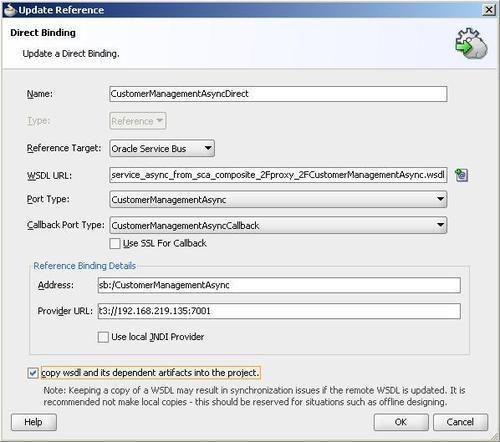
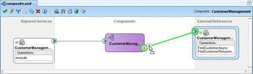
Next, we will change the Mediator component so that the request as well as the response message is passed through by the static routing rule. Perform the following steps to change the Mediator component:
$in.request/inp1:FindCustomer into the Expression field. $out.parameters/ns2:FindCustomer into the Expression field: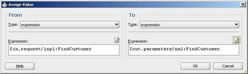
Now let's deploy the SCA composite to the SOA Suite server to test the request. In JDeveloper, perform the following steps:
CustomerManagement, project and select Deploy | CustomerManagement.Next, let's test the CustomerManagement composite. In Enterprise Manager, perform the following steps:
100 into the ID field and click on Test Web Service in the top-right corner.We won't see a response because it is an asynchronous process and the SOA Suite instance will wait forever for this response because we didn't implement the callback in our proxy service.
The OSB console window will show the output of the Log action with the SOAP header of the SOA Suite request:
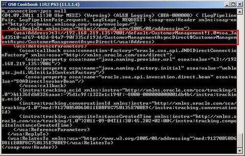
The SOAP Header contains an addressing element with the callback URL:
<wsa:Address>t3://<soaserver>:<port>/default/CustomerManagement2!1.0*soa_fd4fbf3b-8708-4d19-acc7-ed375008370a/CustomerManagementAsyncDirect#CustomerManagementAsyncMed/CustomerManagementAsyncDirect</wsa:Address>.
For the callback URI in the business service we only need to use part of the URL: /default/CustomerManagement2!1.0 /CustomerManagementAsyncDirect#CustomerManagementAsyncMed/CustomerManagementAsyncDirect.
So we need to remove *soa_fd4fbf3b-8708-4d19-acc7-ed375008370a from the URL. This can be done using some XQuery functions in the expression of the Routing Options action.
Let's create the business service implementing the dynamic callback on the address provided by the SOAP header. In Eclipse OEPE, perform the following steps for that:
business folder, create a new business service and name it CustomerManagementCallback.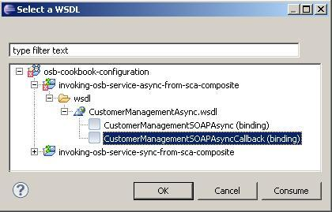
callback in Endpoint URI field and click on Add: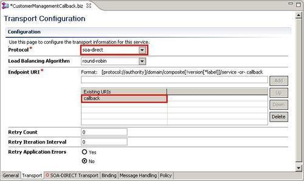
We have created the business service for the callback. Now let's add the necessary actions to dynamically specify the callback address, based on the WS-Addressing header values passed in the request. In Eclipse OEPE, perform the following steps:
CallbackRoute.fn:concat( fn:substring-before($header/wsa05:ReplyTo/wsa05:Address/text(),'*') ,'/', fn:substring-after( fn:substring-after($header/wsa05:ReplyTo/wsa05:Address/text(),'*') , '/' ) )
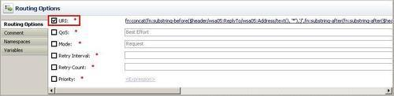
<cus:FindCustomerResponse xmlns:cus="http://osb-cookbook/CustomerManagementAsync" xmlns:cus1="http://osb-cookbook/customer" xmlns:cred="http://osb-cookbook/creditcard"> <Customer> <cus1:ID>100</cus1:ID> <cus1:FirstName>Larry</cus1:FirstName> <cus1:LastName>Ellison</cus1:LastName> <cus1:EmailAddress>larry.ellison@oracle.com</cus1:EmailAddress> <cus1:Addresses/> <cus1:BirthDate>1967-08-13</cus1:BirthDate> <cus1:Rating>A</cus1:Rating> <cus1:Gender>Male</cus1:Gender> <cus1:CreditCard> <cred:CardIssuer>visa</cred:CardIssuer> <cred:CardNumber>123</cred:CardNumber> <cred:CardholderName>Larry</cred:CardholderName> <cred:ExpirationDate>2020-01-01</cred:ExpirationDate> <cred:CardValidationCode>1233</cred:CardValidationCode> </cus1:CreditCard> </Customer> </cus:FindCustomerResponse>
body into the In Variable field and select the Replace node contents option: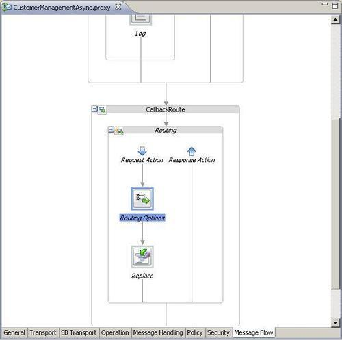
In order to see that the callback worked and the Mediator got the callback message, let's add a file adapter and write the callback message to a file. In JDeveloper, perform the following steps:
AsyncResponseToFile into the Service Name field and click on Next twice. c:\temp into the Directory for Outgoing Files (physical path) field. async_response_%SEQ%.xml into the File Naming Convention field and click on Next. CustomerManagementAsync.mplan and click on the Browse for target service operations icon next to Callback: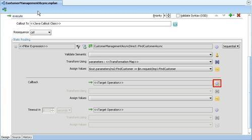
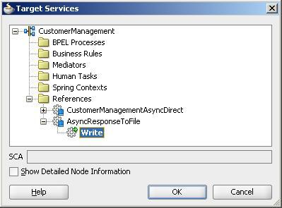
$in.parameters/tns:FindCustomerResponse into the Expression field. $out.body/imp1:FindCustomerResponse into the Expression field.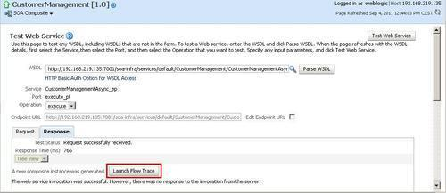
The SOA Suite composite instance flow trace is displayed and we can see that the instance got a response and then invoked the file adapter:
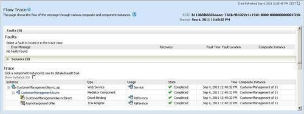
A file called async_response_1.xml containing the callback message should be available at c:\temp. We have successfully invoked the OSB service and returned the response asynchronously back to the Mediator through an OSB business service. To test it, we have written the callback message to a file.
This recipe demonstrated the use case, where an asynchronous SCA service component in a SCA composite invokes an OSB WSLD-based proxy service through the SB transport. To invoke this SB proxy service, the SCA service component needs to use a Direct Binding reference of target type Oracle Service Bus. Because of the asynchronous interface, the proxy service is only handling the inbound side (the request message), the callback message, when the processing on the OSB is finished, is sent by a business service through the SOA-DIRECT transport.
In the recipe, the OSB is not doing any real processing except for creating the response message. In a real case, the OSB proxy service would probably call an external service (maybe with an asynchronous interface as well) and then return the response from that external service through the business service back to the SCA component of the SOA Suite.
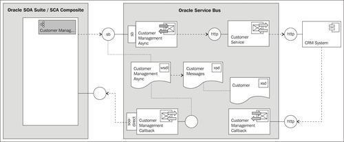
As the callback is sent to a different connection, OSB must be able to remember the original callback location when calling back the SCA component.
When using WS-Addressing, the callback address is sent to the request proxy service in the ReplyTo address header. Before invoking the external service, the request proxy service passes this address as a referenceParameter property inside the ReplyTo header. Following the WS-Addressing specification, the referenceParameter property is inserted in the SOAP header block of the callback from the external service.
The callback proxy service can then extract this callback address and set the callback business service URI through a Transport Options action as shown